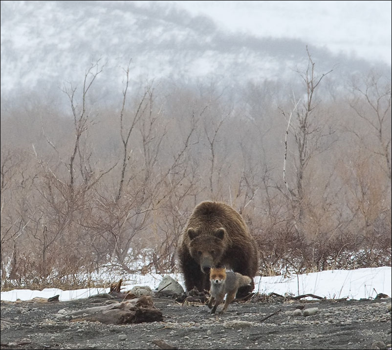

Животные леса
Даже знакомый, давно
исхоженный лес таит в себе массу загадок. Несмотря на царящую в нем
обычно тишину, лес полон жизни. Его населяет великое множество животных,
птиц, насекомых.
Наш сайт посвящен некоторым самым популярным представителям леса. В нем
описываются лиса, волк, заяц, медведь. Отмечены особенности внешнего вида
зверей, их распространения, образа жизни, поведения, их роль в природе и
значение в жизни человека.
